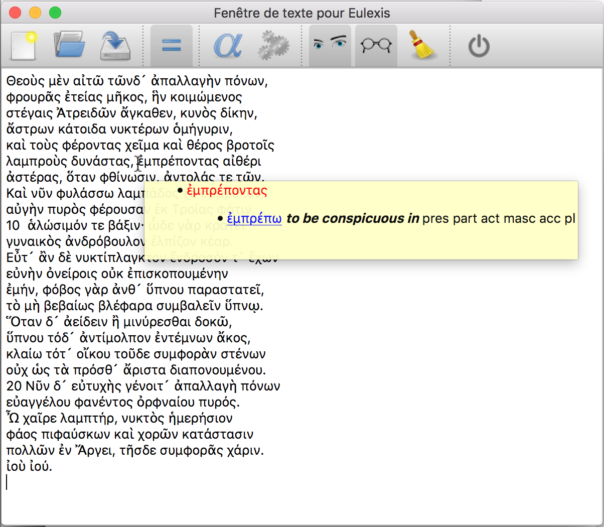
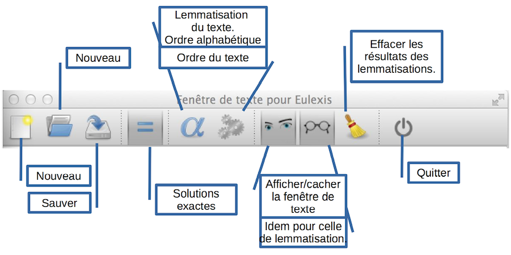

Eulexis v.1.1 – guide juin 2020
précédent : Fenêtre de lemmatisation index suivant : Lemmatisation de fichiers
Le bouton représentant des yeux permet d'afficher et de masquer la fenêtre de texte. Celle-ci peut accueillir un texte qu'il soit saisi directement, copié depuis une autre application ou chargé depuis un fichier. Lorsque le curseur s'arrête sur un mot (ἐμπρέποντας dans l'exemple ci-dessous), la lemmatisation apparaît dans une bulle d'aide. Si l'on clique sur un mot du texte, il est lemmatisé et les solutions trouvées sont ajoutées à la fenêtre de lemmatisation. Parmi les solutions trouvées, s'il y en a une qui correspond exactement à la forme du texte (c'est à dire avec accent et esprit), elle apparaîtra en première position et sera mise en évidence par sa couleur rouge.

On y trouve une barre d'outils différente de celle de la fenêtre de consultation, puisque les fonctions demandées ne sont pas les mêmes. Le groupe de gauche reprend les trois fonctions du menu « Fichier », Nouveau, Ouvrir et Sauver, fonctions accessibles aussi avec les raccourcis habituels. Le premier efface le contenu de la fenêtre de texte, le second charge un texte depuis un fichier et le troisième permet d'enregistrer le contenu des fenêtres secondaires (la consultation des dictionnaires ne mérite pas d'être sauvée). L'ouverture d'un fichier sauvé précédemment avec Eulexis rétablit le contenu des deux fenêtres secondaires (de texte et de lemmatisation) en écrasant ce qu'elles pouvaient contenir.
Remarque : la sauvegarde n'est pas vraiment faite pour fournir un fichier sur lequel on va travailler. Le format est un HTML hybride avec, en réalité, deux fichiers HTML (le contenu des deux fenêtres sauvegardées) mis bout à bout. L'intérêt principal de cette fonction Sauver est de permettre de conserver l'état des fenêtres quand on doit interrompre son travail pour le reprendre plus tard. Pour établir des listes de vocabulaire, par exemple, on utilisera plutôt la fonction de lemmatisation de fichiers. Cette fonction produit un fichier CSV qui peut être repris avec un tableur.

Le bouton portant le signe égal (=) permet de choisir si l'on donne toutes les solutions de lemmatisation ou seulement celles qui correspondent exactement à la forme rencontrée. En effet, la recherche des solutions ne tient pas compte des accent et esprit que peuvent porter les mots. Si le bouton « égal » est activé, les solutions qui n'ont pas les mêmes accent ou esprit sont éliminées s'il y a une forme exacte. Les deux boutons au milieu (engrenages et alpha) permettent de lemmatiser le texte en conservant l'ordre des mots dans le texte ou en les rangeant en ordre alphabétique. Si le texte est long, la lemmatisation peut prendre un certain temps.
précédent : Fenêtre de lemmatisation index suivant : Lemmatisation de fichiers